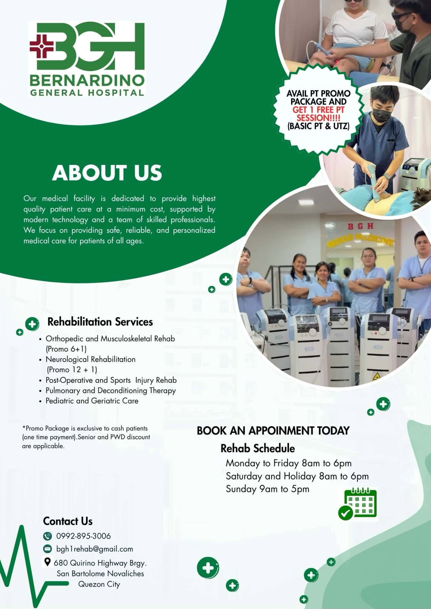
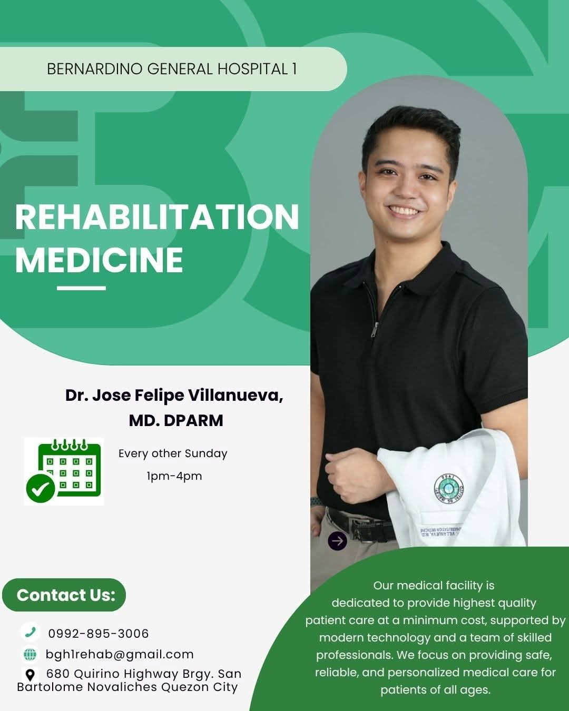
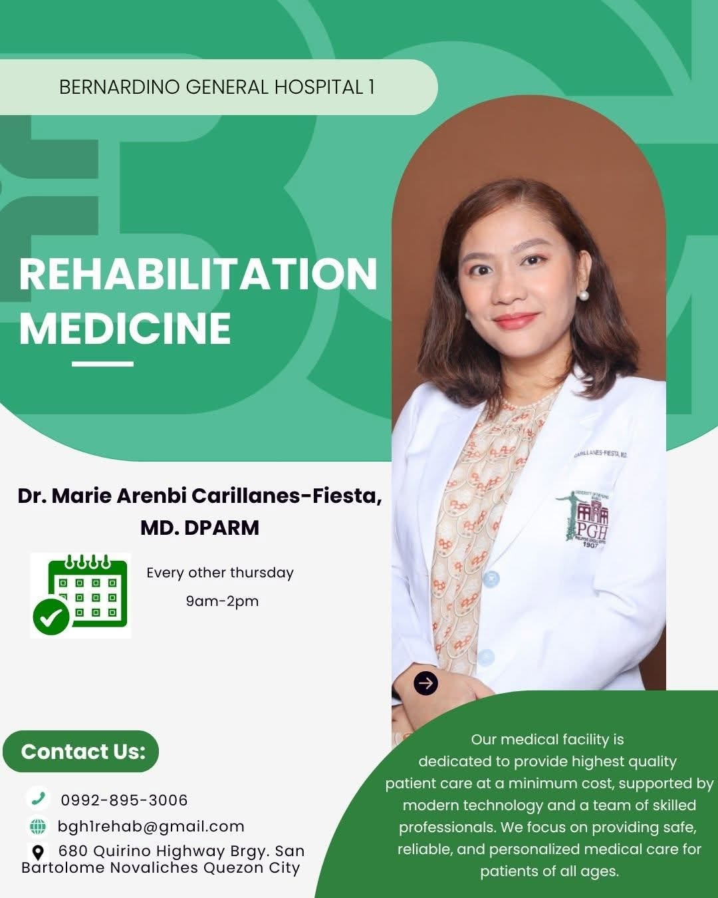

General hospital care
Inpatient and outpatient services for families in San Bartolome and nearby Novaliches/Quezon City barangays.
San Bartolome · Quezon City
We constantly strive to give you quality care — general hospital services and rehabilitation medicine along Quirino Highway, always open for the community.
Hospital and rehabilitation services for San Bartolome and nearby Quezon City barangays — confirm schedules and availability when you call.
Inpatient and outpatient services for families in San Bartolome and nearby Novaliches/Quezon City barangays.
Diagnostic imaging support as part of clinical and rehab care pathways — call ahead for scheduling.
Facebook lists the hospital as always open. Confirm the unit or clinic you need when you arrive or call ahead.
Physiatrist-led rehabilitation for orthopedic and musculoskeletal recovery, including promo packages.
Neurological rehabilitation and post-operative / sports injury deconditioning therapy for patients of all ages.
Rehab schedules run Monday–Friday and select weekends — ask BGH Rehab at 0992-895-3006 for today's roster.
Announcements and rehab team highlights from Bernardino General Hospital's official Facebook page.



Bernardino General Hospital is a hospital on Quirino Highway, Brgy. San Bartolome, Quezon City — providing quality healthcare services to its patients at accessible cost.
With a dedicated Rehabilitation Medicine unit and a strong Facebook following, this sample site gives patients a clean landing page for phone, address, and hospital identity alongside your active Facebook page.

680 Quirino Highway, San Bartolome, Quezon City
Call the main lines for admissions and directions, or the rehab line for therapy scheduling.
Main lines 8935-5264 Alt: 8936-6050 · 8935-7213
Email bghcorpone@yahoo.com
Address
680 Quirino Highway, Brgy. San Bartolome
Quezon City 1116
We constantly strive to give you quality care
This quotation sample gives patients a clean landing page for phone, map, and hospital identity alongside your active Facebook page.
Message on Facebook